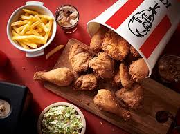
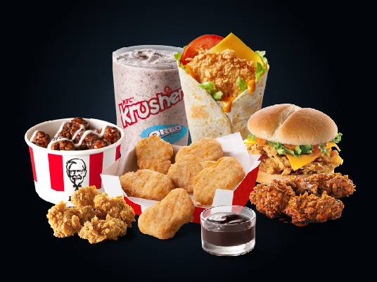
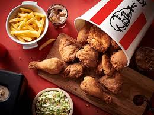
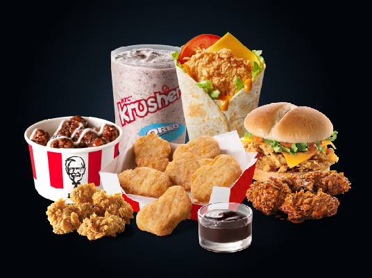

K.F.C
KFC (Kentucky Fried Chicken) was found by Colonel Harland Sanders, an entrepreneur who began selling fried chicken from his roadside restaurant in Corbin, Kentucky, during the Great Depression. Sanders identified the potential of restaurant franchising, and the first "Kentucky Fried Chicken" franchise opened in Salt Lake City, Utah, in 1952. KFC popularized chicken in the fast-food industry, diversifying the market by challenging the established dominance of the hamburger. Branding himself "Colonel Sanders", the founder became a prominent figure of American cultural history, and his image remains widely used in KFC advertising. The company's rapid expansion made it too large for Sanders to manage, so in 1964 he sold the company to a group of investors led by John Y. Brown, Jr. and Jack C. Massey. KFC was one of the first fast-food chains to expand internationally, opening outlets in Britain, Mexico, and Jamaica by the mid-1960s. Throughout the 1970s and 80s, KFC experienced mixed success domestically, as it went through a series of changes in corporate ownership with little or no experience in the restaurant business. In the early 1970s, KFC was sold to the spirits distributor Heublein, which was taken over by the R. J. Reynolds food and tobacco conglomerate, which later sold the chain to PepsiCo. The chain continued to expand overseas, and in 1987 KFC became the first Western restaurant chain to open in China. In 1997, PepsiCo spun off its restaurants division as Tricon Global Restaurants, which changed its name to Yum! Brands in 2002. Yum! has proven to be a more focused owner than Pepsi, and although KFC's number of outlets has declined in the US, the company has continued to grow in Asia, South America, and Africa. The chain has expanded to 18,875 outlets across 118 countries and territories, with 4,563 outlets in China alone, KFC's largest market.